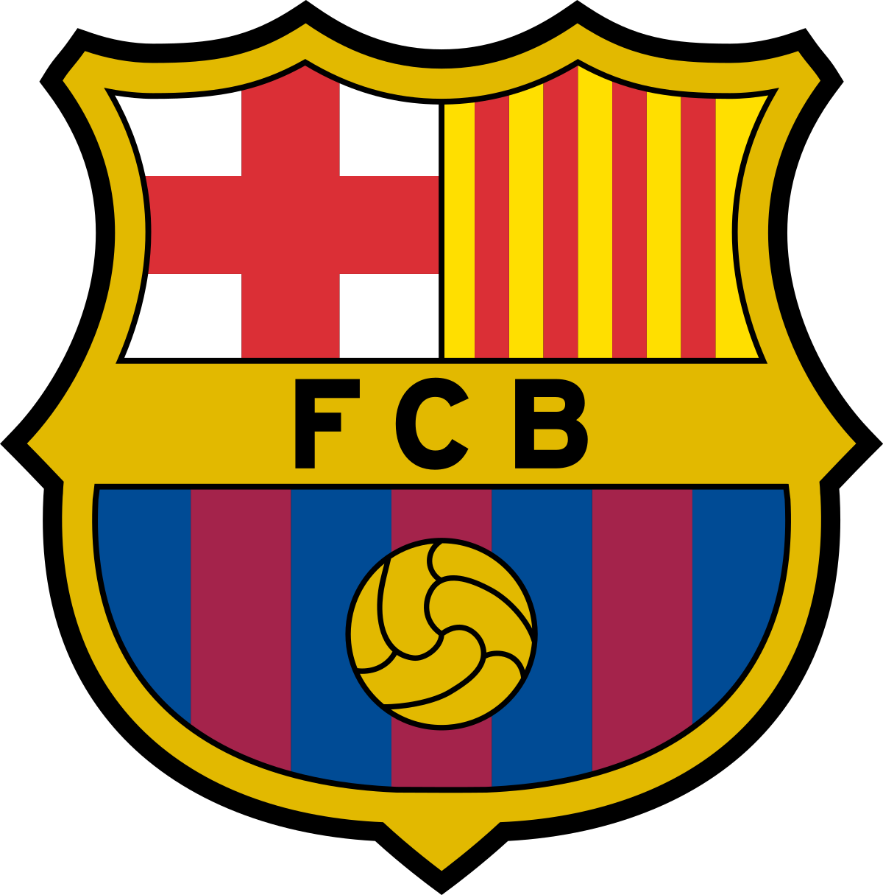
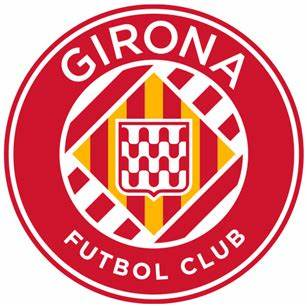

Equipos
Consulta a nuestros equipos de Laliga Web
BarcelonaFc
El Fútbol Club Barcelona (en catalán: Futbol Club Barcelona), conocido popularmente como Barça,n. Es una entidad polideportiva con sede en Barcelona (Cataluña, España). Fue fundado como club de fútbol el 29 de noviembre de 1899 y registrado oficialmente el 5 de enero de 1903.
Real Madrid

El Real Madrid Club de Fútbol, más conocido simplemente como Real Madrid, es una entidad polideportiva con sede en Madrid (España). Fue registrada oficialmente como club de fútbol por sus socios el 6 de marzo de 1902 con el objeto de la práctica y desarrollo de este deporte, si bien sus orígenes datan del año 1900, y su denominación de (Sociedad) Madrid Foot-ball Club de octubre de 1901, siendo el quinto club fundado en la capital.n. Tuvo a Julián Palacios y los hermanos Juan Padrós y Carlos Padrós como principales valedores de su creación.La entidad adquirió su designación actual el 29 de junio de 1920 mediante el otorgamiento del título honorífico de «Real» por parte de su majestad el rey Alfonso XIII de España, quien también conferiría la distinción visual correspondiente incorporando la corona real en su emblema.
Atletico de Madrid

El Club Atlético de Madrid, S. A. D. es un club de fútbol español fundado el 26 de abril de 1903. Es uno de los clubes activos más longevos de España, el sexto que más temporadas ha estado en Primera División, ha disputado 88 de las 93 ediciones y ocupa el 3.º puesto en la clasificación histórica del fútbol español. Disputa sus partidos como local en el Estadio Metropolitano, con capacidad para 70 460 espectadores.
Girona
El Girona Futbol Club es un club de fútbol español de la ciudad de Gerona, que milita en la Primera División de España. Fue fundado el 23 de julio de 1930 y su primer presidente fue Albert de Quintana de León. Los colores que identifican al club son el rojo y el blanco, utilizados en forma de rayas verticales en su uniforme titular desde su fundación. Desde 1970 juega como local en el Municipal de Montilivi, propiedad del municipio de Gerona, pero concedido al club hasta 2068, y con capacidad para 14.020 espectadores.